Creating Sub MenuItems for FAB (Floating Action Button)
Posted by ptyagi in Development
Final Outcome
Our target to integrate FAB into an existing Android App and creating submenus. Settings icon is used as FAB. Clicking on it will open its submenus: Save, Edit and Photo. Clicking on X will close submenus and Settings icon will re-appear.
This is how main screen will look after FAB integrated into it.
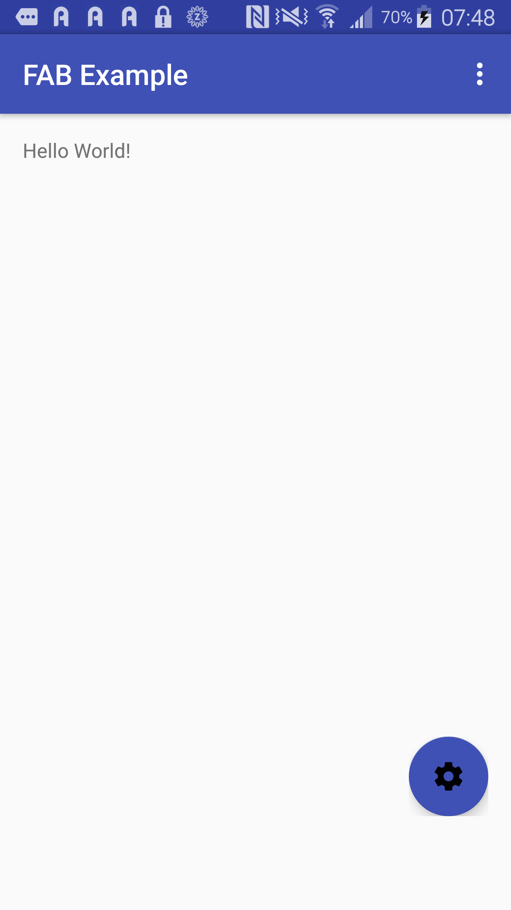
Clicking on Settings icon will open sub menus:
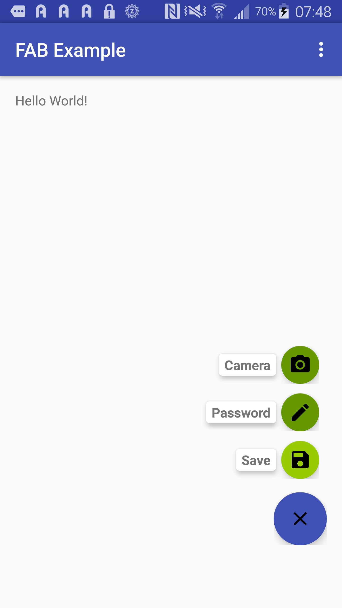
Create Android Studio Project
Step#1: Create New Project in Android Studio:
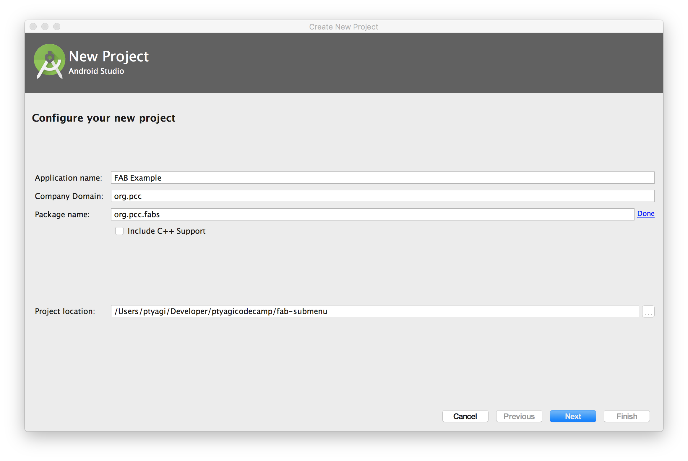
Step#2: Choose Blank Activity: 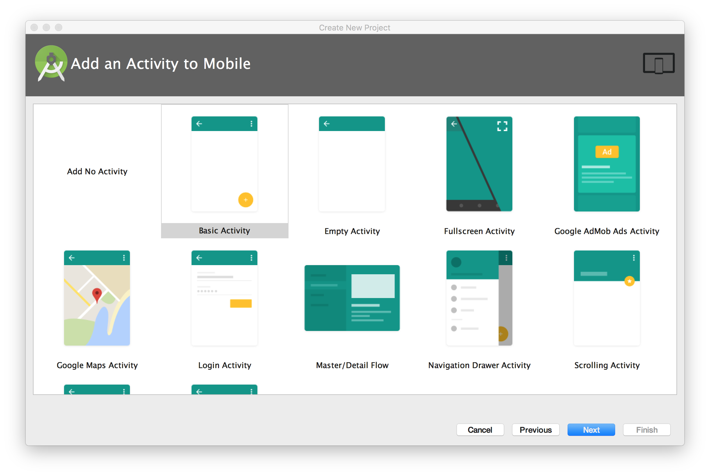
Step#3: This how your project would look like : 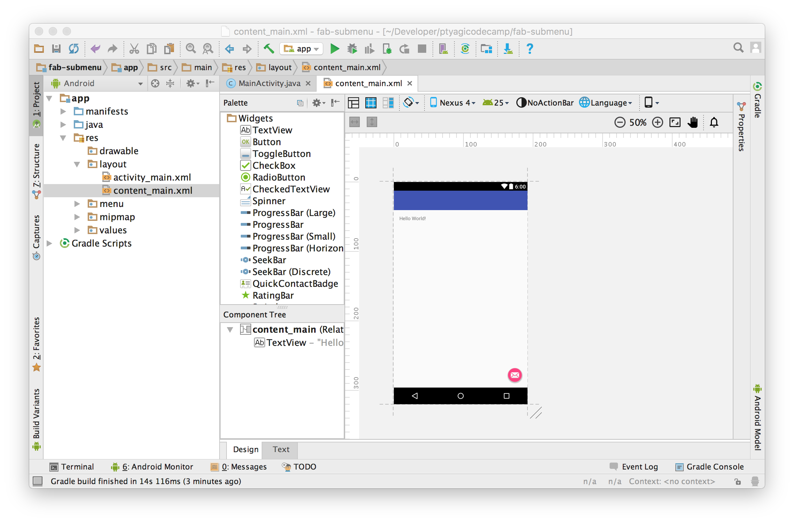
Preparation
Step#1: Assets:
I need few assets to be used as FAB submenu icons.
I used Android Studio’s built-in tool to generate Vector Assets.
You can access this tool right clicking on app module → Click New → Click on Vector Assets
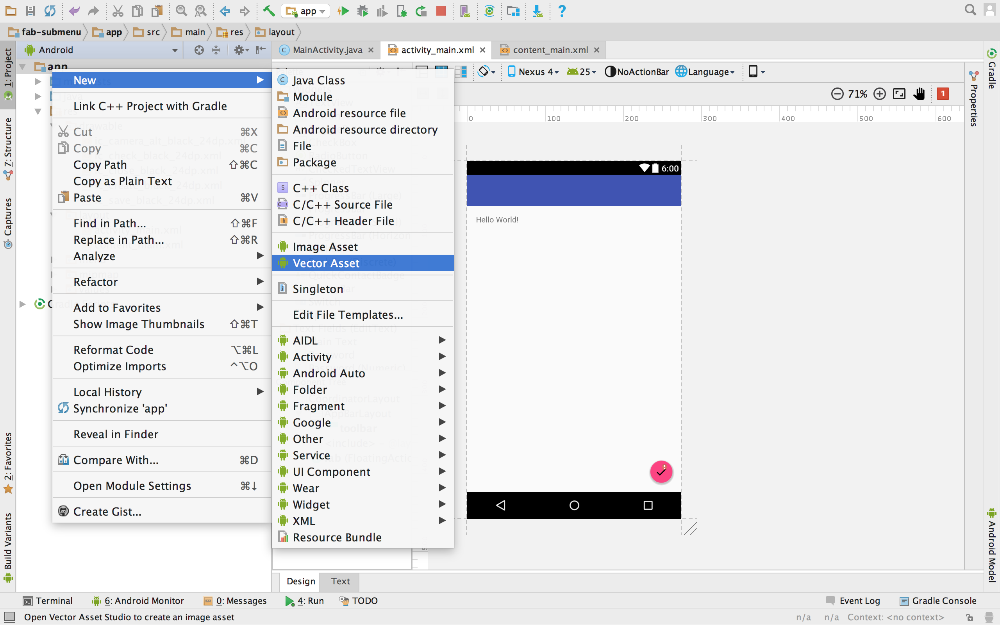 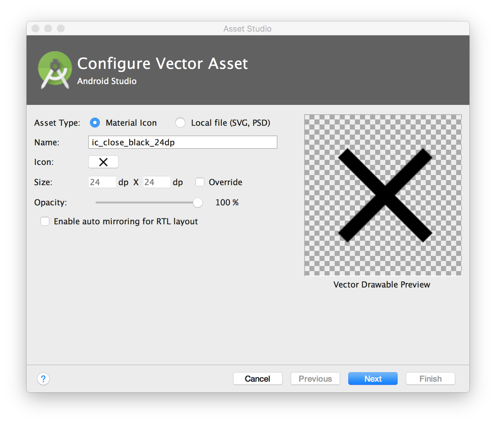 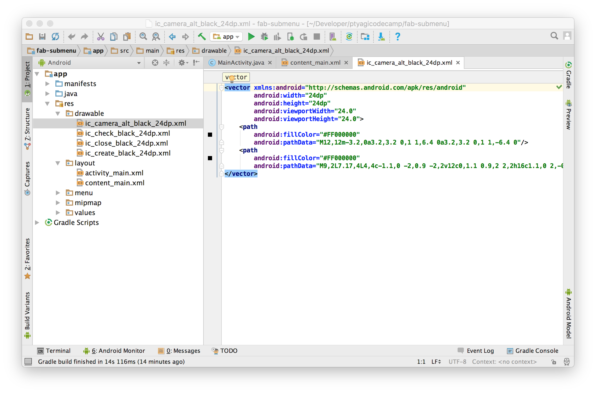
Step#2: Configuration:
I’ll be using cardView component to display description for sub menu items.
Here’s how you can add it as a dependency in your build.gradle:
compile 'com.android.support:cardview-v7:25.1.0'
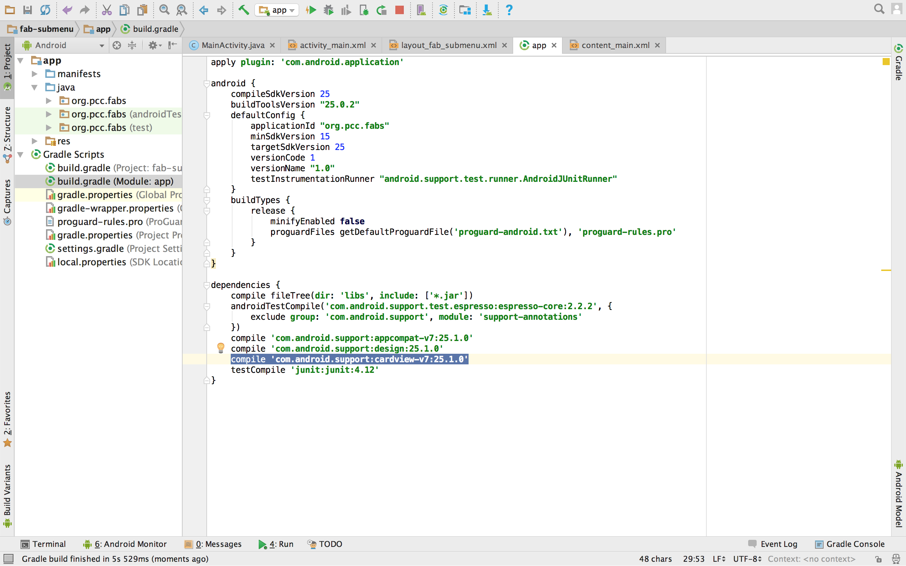
XML Layout
Step#1: Create a new layout file to contains FAB and its sub menu items.
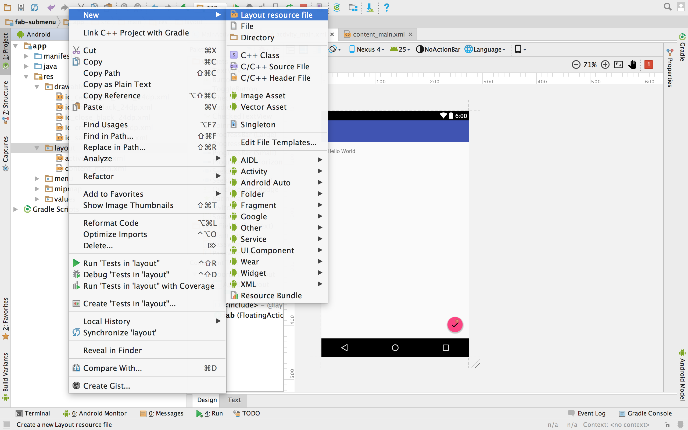
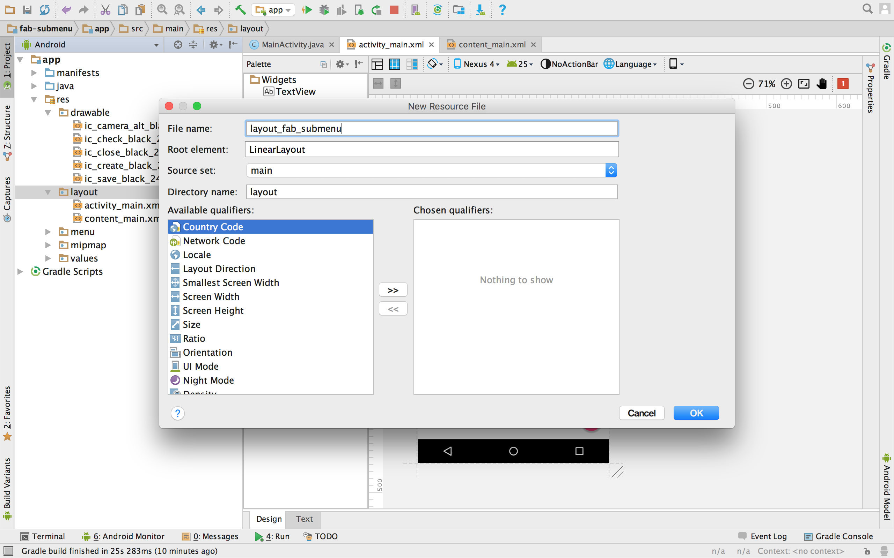
I named it as layout_fab_submenu.xml. It’s a FrameLayout.
I chose FrameLayout because I wanted a screen floating atop of existing screen and
a holder for all FAB menu items. Don’t forget to set the top margin to android:layout_marginTop="?attr/actionBarSize" to avoid Actionbar overlapping.
<FrameLayout
xmlns:android="http://schemas.android.com/apk/res/android"
xmlns:app="http://schemas.android.com/apk/res-auto"
android:id="@+id/fabFrame"
android:layout_width="match_parent"
android:layout_height="match_parent"
android:layout_marginTop="?attr/actionBarSize"
android:paddingBottom="@dimen/activity_vertical_margin"
android:paddingLeft="@dimen/activity_horizontal_margin"
android:paddingRight="@dimen/activity_horizontal_margin"
android:paddingTop="@dimen/activity_vertical_margin"
android:orientation="vertical">
.....
</FrameLayout>
Step#2: Layout for FAB SubMenu items
Now, I want to create one LinearLayout for each FAB. Since I want all of the FAB items
to be at bottom right corner of screen, so I will use android:layout_gravity=bottom|end.
Every sub menu will have its own LinearLayout like following. Each LinearLayout has one CardView
to hold TextView for explaining FAB's purpose and one android.support.design.widget.FloatingActionButton next to it.
<LinearLayout
android:id="@+id/layoutFabSave"
android:layout_width="wrap_content"
android:layout_height="wrap_content"
android:gravity="center_vertical"
android:layout_gravity="bottom|end"
android:layout_marginRight="8dp"
android:layout_marginBottom="120dp"
android:layout_marginEnd="8dp"
android:orientation="horizontal">
<android.support.v7.widget.CardView
android:layout_width="wrap_content"
android:layout_height="wrap_content"
app:cardBackgroundColor="@color/cardview_light_background"
app:cardCornerRadius="@dimen/cardCornerRadius"
app:cardElevation="@dimen/cardElevation"
app:cardUseCompatPadding="true" >
<TextView
android:id="@+id/cvtSave"
android:layout_width="wrap_content"
android:layout_height="wrap_content"
android:text="@string/save"
android:textAppearance="?android:attr/textAppearanceSmall"
android:textStyle="bold"
android:paddingRight="@dimen/cardview_horizontal_padding"
android:paddingLeft="@dimen/cardview_horizontal_padding"
android:paddingBottom="@dimen/cardview_vertical_padding"
android:paddingTop="@dimen/cardview_vertical_padding" />
</android.support.v7.widget.CardView>
<android.support.design.widget.FloatingActionButton
android:id="@+id/fabSave"
android:layout_width="wrap_content"
android:layout_height="wrap_content"
android:src="@drawable/ic_save_black_24dp"
app:backgroundTint="@android:color/holo_green_light"
app:fabSize="mini" />
</LinearLayout>
Lets check out More Code
In order to support FAB opening and closing, you would need to write two methods. One is to make sub menus
visible, and other is to hide sub menus and only show main FAB which is Settings icon is our case.
When Settings FAB expands, it turns into 'X' to give option to be able to close expanded sub menus.
These are the two methods you would need:
//closes FAB submenus
private void closeSubMenusFab(){
layoutFabSave.setVisibility(View.INVISIBLE);
layoutFabEdit.setVisibility(View.INVISIBLE);
layoutFabPhoto.setVisibility(View.INVISIBLE);
fabSettings.setImageResource(R.drawable.ic_settings_black_24dp);
fabExpanded = false;
}
//Opens FAB submenus
private void openSubMenusFab(){
layoutFabSave.setVisibility(View.VISIBLE);
layoutFabEdit.setVisibility(View.VISIBLE);
layoutFabPhoto.setVisibility(View.VISIBLE);
//Change settings icon to 'X' icon
fabSettings.setImageResource(R.drawable.ic_close_black_24dp);
fabExpanded = true;
}
Now, its time to hook them up in the main code to make it functional. Lets start with onCreate() method:
public class MainActivity extends AppCompatActivity {
//boolean flag to know if main FAB is in open or closed state.
private boolean fabExpanded = false;
private FloatingActionButton fabSettings;
//Linear layout holding the Save submenu
private LinearLayout layoutFabSave;
//Linear layout holding the Edit submenu
private LinearLayout layoutFabEdit;
private LinearLayout layoutFabPhoto;
@Override
protected void onCreate(Bundle savedInstanceState) {
super.onCreate(savedInstanceState);
setContentView(R.layout.activity_main);
Toolbar toolbar = (Toolbar) findViewById(R.id.toolbar);
setSupportActionBar(toolbar);
fabSettings = (FloatingActionButton) this.findViewById(R.id.fabSetting);
layoutFabSave = (LinearLayout) this.findViewById(R.id.layoutFabSave);
layoutFabEdit = (LinearLayout) this.findViewById(R.id.layoutFabEdit);
layoutFabPhoto = (LinearLayout) this.findViewById(R.id.layoutFabPhoto);
//When main Fab (Settings) is clicked, it expands if not expanded already.
//Collapses if main FAB was open already.
//This gives FAB (Settings) open/close behavior
fabSettings.setOnClickListener(new View.OnClickListener() {
@Override
public void onClick(View view) {
if (fabExpanded == true){
closeSubMenusFab();
} else {
openSubMenusFab();
}
}
});
//Only main FAB is visible in the beginning
closeSubMenusFab();
}
....
}
Congratulations!
Yay ! You got FAB integrated along with sub menu in less than 5 minutes. Its time to celebrate :)
Source code is available at Github